? design.md ? Operation Flow ???????????????????????
圖一：建立需求、付服務費與比較選定
圖二：餐廳協調、配送、驗齡與正常完成
圖三：餐廳無法配合，取消並全額退服務費
圖四：驗齡未通過、酒商取回與平台成本
圖五：展示入口、重新整理與情境重設
圖六：所有操作共用的檢查與保存結果
???? SVG ? Mermaid ???





